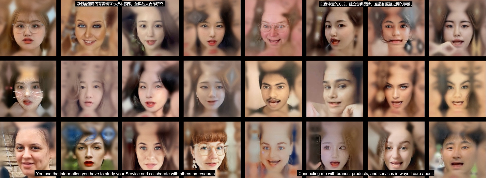
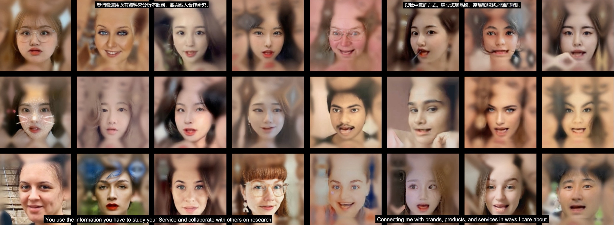
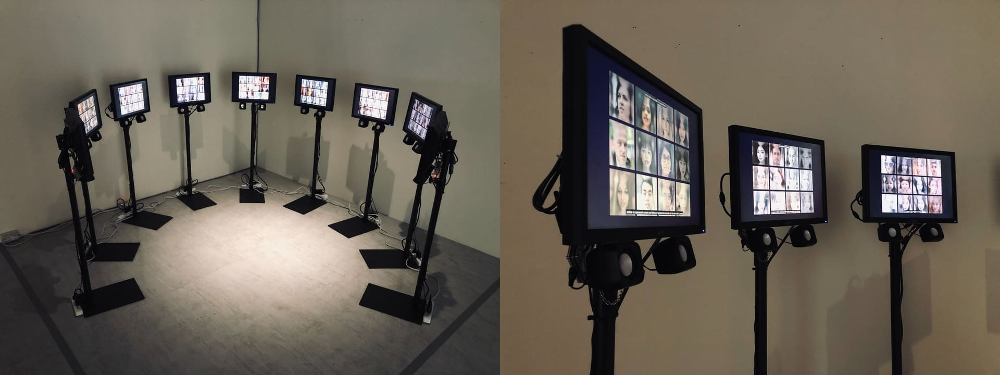
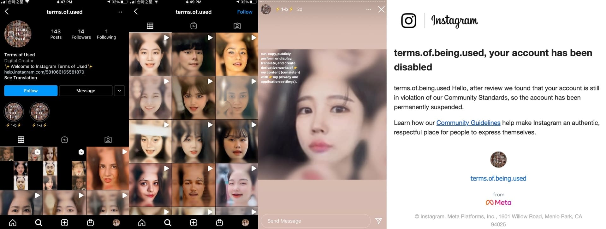
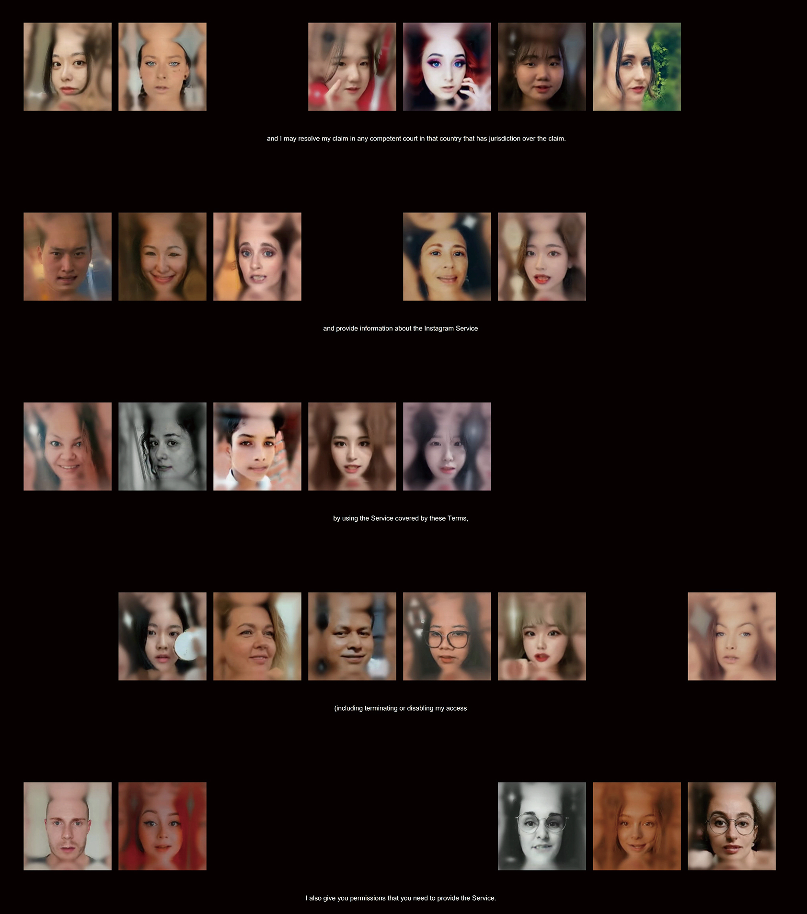
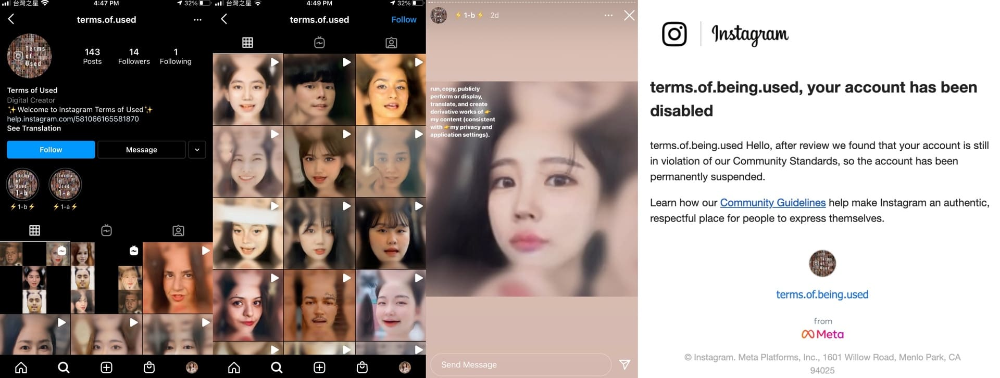
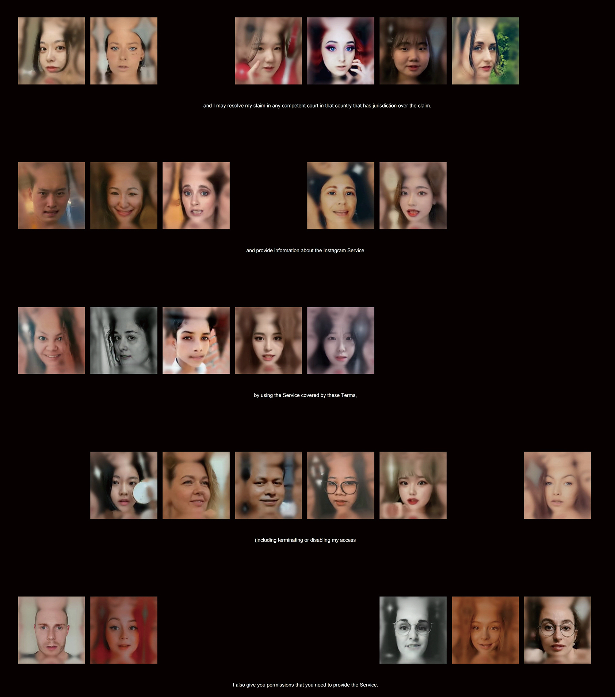

Terms of Being Used
Rewriting platform power by reversing Instagram’s Terms of Use through AI-generated self-portraits.
Surveillance Capitalism
AI-generated Video
Python Web Crawler
Wav2Lip
Installation Art
TIME | 2022
AUTHORS | Po-Yao Wu
PUBLICATION | Terms of Being Used: Rethinking User Agency in Surveillance Capitalism. C&C ’25: Proceedings of the 2025 Conference on Creativity and Cognition, 2025. (DOI: 10.1145/3698061.3734395)
AWARDS | Golden Prize, New Media Art Category – 2022 National Art Exhibition R.O.C.
EXHIBITIONS |
- 2025 11th Asia - Europe Mediations Biennale | Krakow, Poland / Hannover, Germany.
- 2023 Always on – Net Art Exhibition | Hsinchu, Taiwan.
- 2021 Taipei Digital Art Festival – Borderless Shelter | Taipei, Taiwan.
- 2021 Athens Digital Arts Festival – TACTUS | Athens, Greek.

MOTIVATION |
Terms of Being Used interrogates how social media platforms transform self-expression into data commodities within surveillance capitalism. By grammatically inverting Instagram’s Terms of Use—turning the user from subject to object—the project exposes the hidden power asymmetries embedded in everyday digital participation. AI-generated videos of scraped selfies reciting the reversed contract highlight how users willingly enact their own commodification. The work challenges viewers to confront their complicity in participatory surveillance and questions what “agency” means when platforms algorithmically shape identity, behavior, and visibility.
APPROACH |
Approximately 10,000 publicly available selfies were collected via a Python-based Instagram crawler, then processed through facial detection, alignment, and aesthetic degradation to emphasize their status as digital artifacts. Instagram’s Terms of Use were rewritten by reversing subject–object grammar, converted into synthetic speech, and paired with each processed face. Using Wav2Lip, the system generated videos in which users appear to recite their own commodification.
 

These videos were exhibited in a circular nine-screen installation that mimics a panoptic structure, with overlapping murmurs of the reversed terms producing a disorienting soundscape. The project also confronted platform censorship: when the videos were uploaded to Instagram, the account was immediately banned, revealing the platform’s control over self-representation and reinforcing the critique at the core of the work.
 


